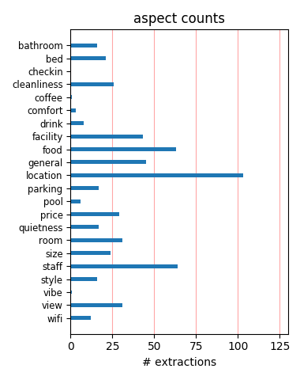
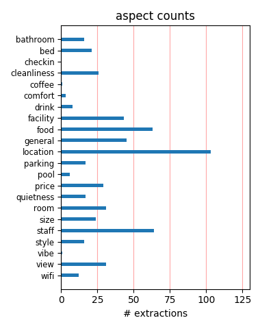

A suppossed refundable sum of USD306.12 was deducted from my Visa account since 1st November 2010. Despite several calls from Nigeria the money was not refunded. The manager has refused to answer my calls again. I sent email he did not reply. They are fraudulent. I stayed in room 1405 of sandman suites.
Hotel was decent enough, trendy lobby area. One bedroom suite was quite small, tiny little bathroom that steamed up pretty nicely after shower. Made a mistake of using the built-in clothes washer/dryer....never did get the clothes dry, had to leave with damp clothes in plastic bags. Decent $20 parking rate.
Enjoyed the stay here. Near restaurants, bake shop, fruit and produce store. Easy walk to Engish Bay and Stanley Park. Accommodation were not overly huge by any means, but were comfortable. Found the kitchenette well equipped and quite handy to have. I would use this Hotel again unless there was a large increase in rates.
Not a luxury hotel by any means but very practical. Located on Davie Street a very hip location with lots of restaurants and bars. Easy walk to all downtown tourist spots and the Washer&dryer made it a great stop between our Cruise ship schedules. Staff was very helpful and we would stay there anytime we need to be in Vancouver
We had booked another hotel, but when we arrived it was unsuitable. The manager recommended SANDMAN SUITES ON DAVIES and called for a reservation. We loved the hotel ! Our room had a small kitchenette, and a balcony overlooking English Bay. Everyone at the hotel were so very nice and helpfull. We will always stay at this hotel when we are in Vancouver.
Great location, room facilities good, pool great, staff exceptionally helpful. Only downside is noise from the extractor fan above the night club next door - just stay on the pool side or high up then there's no problem - staff happy to change rooms. Gives you the option of self catering right in the heart of Vancouver. Overall very good - we would use again.
My friend and I spent one night, but I would happily return to this hotel because of the fair price, friendly staff, clean suite and great location - Stanley Park and the ferry to Granville Island are within walking distance and there's a great little bakery just two doors down. The neighborhood is just funky enough to be interesting without being totally over-the-top.
Stayed here in August for the our first trip to Vancouver. Great location for bars and restaurants, ten minutes walk from English Bay Beach. Staff very helpful, rooms clean and the kitchens are well stocked. This is very handy if you take a doggy bag from a restaurant. Davie Street can be busy at night but the hotel is well away from the noise. Would definitely stay there again.
We stayed here for 6 days, excellent value. Good kitchen and bathroom. Sofabed ok although it was in the lounge. Bedroom v comfortable. We were on 21st floor and had amazing views - both in the dyatime and at night. The Davie area has plenty going on - 24 hr shops, good restauarnts. Also handy to walk to false Creek and get the ferry to Granville Island. We really enjoyed our stay here.
We stayed three nights and found this to be a good base for exploring the city. The desk staff were extremely helpful. The room was basic but clean and we liked the full kitchen. Our experience in the restaurant next door was really different from other reviewers', since our orange juice came right on time and we had sausages every morning. All in all, it is a good value for a centrally located hotel in a lively area.
Our stay was a positive experience. We paid a little and got a lot. We had a stove, fridge, washer dryer, cable, microwave - all the essentials for an amazing price. Staff were good and very courteous. Elevators were slow, but had no problem getting to places on time. Previous reviews were over reacting and exaggerated to a minor problem. Very close to all the alternative life style clubs - what a rocking good time!!!!
The Sandman Suites on Davie is a great place to stay for anyone looking for a great location in Vancouver. It is clean, modern, and has great service. While we were there, some unusual things happened (no water and broken elevator) during the busy Canada Day weekend. Despite these issues ( I had to wash my feet in the kitchen sink), I would highly recommend this hotel to anyone and I will definetely stay at this hotel in the future!
We had 6 nights at the Sandman Suites on Davie this June. The location is excellent, walking distance to most Vancouver attractions, shops and restaurants very close by. The rooms are good with a kitchen, lounge area, bedroom and bathroom. All very well equipped, including a washer/dryer and ironing board. Only a couple of faults, like much of Canada do not expect a plug for the bath and the swimming pool is outside - cold even in June!
Just spent three nights at Sandman Suites on Davie. The rooms there are clean and well equipped with new appliances- fridge,stove,dishwasher and washer/dryer combo which looked a little complicated at first but was easy to figure out. The view was not great but the location was excellent for us, we walked all over downtown Vancouver and spent a day in Stanley Park. The staff were friendly and helpful. No complaints, would recommend this hotel to anyone.
This was my first trip to Vancouver and I picked the perfect hotel! I was on the 19th floor with a spectacular view of the downtown. The room had everything, full kitchen, washer/dryer, wifi, tv and sound system, even a dishwasher! There is a super right up the street for supplies, so I could cook, picnic on the beach which is a couple of blocks away, or just pack snacks and hike to the downtown. This hotel is in a great location and you will not be disappointed.
The hotel was great value for money. We had a great room that had a fantastic view of English Bay. The room was well equipped and clean. We didn't experience any problems with the lifts although I guess we were there out of season so it was not that busy. The location is good with plenty of bars, restaurants and grocery stores on the doorstep. It felt a really safe neighbourhood. Its not far to Stanley Park which is well worth a visit. Would defintatley stay there again.
The suite was quite spacious, lobby and check-in also quite good. Everything (bath, kitchen, bedroom) very clean, the bed comfy, but I was glad we didn't have to use the aircondition. We switched it on, and it was super noisy (you don't hear the street sounds any more, though). The whole building is a bit dated, esp. the windows are old and don't keep any noise out. The area is ok, lots of cafes and restaurants around, location convenient for any downtown things you might want to see.
Stayed here for 10 days in mid/late October, had one of the smaller suites but the size was more than adequate - and the price was exceptional value. Facilities were great, as were the staff. We arrived well before check-in time, having had a morning flight from the UK, no problems checking in early. Location is excellent - know the area well having stayed at the Sheraton on previous visits, but it will be the Sandman on further visits. Does everything it says on the tin and more besides.
We went back to Vancouver on the 5th anniversary of our wedding. We wanted to stay in the center of the gay district so the Sandman was our choice because everything we wanted (bars, restaurants, and spas) was in walking distance. We loved the hotel! Yes, the rooms are small and the elevator slow but location, location, location made up for it! The rooms are comfortable, clean, and convenient and where else do you get a kitchen and washer/dryer for the money? We will definitely return there on our next trip!
We stayed there for three nights the rates were very reasonable. We got upgraded to a bay view which was spectacular. Took some beautiful pictues of the sunset right from our balcony. Never got tired of looking out or sitting on the balconly. The room was spacious with a kitchen and washer/dryer. The location was central to the beach and lots of great places to eat including bakeries nearby. Easy to walk everywhere from the hotel. The parking was secure. The front desk was very helpful. Can't wait to return.
Don't be fooled by the super-glamour hall of this hotel...soon you will discover that the rooms are equipped with plywood furniture and that they would need a refurbishment. We had to ask for help beacause we were not able to open the french window but it turned out that it was blocked, so we had to move to another room because we needed some fresh air inside the room. The kitchenette and the washing machine are very handy, and the view form the window is really nice, but all in all we would not come back in this hotel.
Just had a three night stay at Sandman suites.... although it was a bit noisy (I was there over St. Patty's weekend), the hotel was great. Room was very spacious and front desk staff were very helpful. I was given a complimentary upgrade with a wonderful view of the sea and mountains... Location was great. Easily walkable to many nearby attractions including Stanley Park, Canada Place, etc... Good selection of restaurants nearby including a great thai place across the street.. I was very happy with my stay and hope to return soon!
This is a fantastic hotel with all the amenities you could possibly wish for. We had a living room, bedroom, and a full kitchen. Even a washer and dryer! We requested a room with an ocean view, and we were truly rewarded with one on the 20th floor. The location was superb too! Tons of eateries all around, and 3 blocks away from the beach. About the same distance from Robson street and the amazing shopping. Can't say enough good things about this place. Clean, spacious, neat and tidy, good service. And considering the location, it is really well priced.
We stayed here for 3 nights while we were in vancouver for Doctor's appointments. To help save money we wanted a hotel suite with a kitchen. The room was big. It had a separate bedroom, living room, bath, and full kitchen. The only thing which was disappointing was the pool was an outside pool and closed for the season. You have to park around the back of the hotel which was a little awkward to begin with. There are allot of eating options such as Denny's, Indian, Asian, pizza, and pasta areas. Starbucks and Blenz are near by and a supermarket. We would stay here again.
We stayed in this hotel at the end of a long tour of Canada so choose it as it was a suite and allowed us to cook after eating out for 3 weeks. We got a suite on the 23rd floor which allowed a view of the Vancouver harbour area and mountains which was beautiful. The suite was very well equipped, it even included a washing machine which was a blessing for us rapidly running out of clean clothes. Everything was within walking distance that we wanted to see too. The reception is very trendy looking and the staff were very helpful. This hotel allowed for a very nice end to a holiday.
My husband and I just spent four nights at the Sandman on Davie and loved it. We have been to Vancouver many times and have stayed at a lot of different hotels but now we've found 'the one'. The location couldn't be better. As previously stated it's very close to everything you could want. The suites are very well appointed, and the kitchen is well stocked with everything you need to prepare a meal if you choose to. Having the option of a washer and dryer was an added bonus. We chose the ocean view suite when we booked and were very happy that we did, the view was amazing and well worth the extra cost.
We booke d here for the first night of our 3 week trip to the area, and the price seemed very reasonable for what we were getting, and it was! The suite gave us a great view over Stanley Park, the city and the water and the room was clean, compact and bijou. Probably the only thing we didn't like was the fact that the balcony was very unsafe for children and the door out to the balcony could easily be opened by our 2 year old. So safety was a bit of an issue here but otherwise the room was great. The reception was very funky and modern, and the staff helpful. Moxies was nice, except for the fire alarm!
I stayed at the Sandman Suites on Davie for one night and all I can say is that hotel reignited my idea of luxury! For the price I paid, it was well worth it. It's location is right in the heart of downtown with ample access to all amenities - cafes, restaurants, fast food etc. The service was outstanding!! Felt really welcomed and concierge was amazingly helpful to a new immigrant! I couldn't praise the service enough! The room I stayed in was absolutely beautiful! Balcony was spacious. Room was a little small but nothing uninhabitable. Overall, a wonderful stay and would absolutely stay again in a heartbeat!!
Just spend 1 night at this hotel but it was my 3rd stay here, other stays were 4-5 nights, and as usual was quite pleased with everything..On arrival my friend and myself were greeted by a warm welcome. Our room was on the 22nd and this gave us an amazing view, although I am afraid of heights, my friend loved it. The suite was very clean and well kept as usual. Very nice stay with the wonderful location. Very quiet in the hotel during our stay, noise from outside but you expect that in a city that size. One problem still remains though are those strange washer/ dryer machines, as I still cannot figure them out and others say the same.
While having an in suite kitchen was a nice touch. The fact that the heating for the suite did not work at all for the entire duration of my 6-day stay was inexcusable. Also, the water in the shower was barely warm at the best of times and cold for the last two. I had to wash my hair in the bathroom sink because oddly the water was hot in there. As far as the internet: no wireless and speeds comparable to dial-up and would randomly cut off. I will make a point of letting everyone I know how unhappy I was here and to recommend they stay elsewhere. No apology short of some sort of refund will make me happy. Thanks Sandman for ruining my trip.
We chose this hotel for a four night stay in July as it had a separate living / kitchenette area. We were not disappointed. The hotel is very centrally located in the gay neighbourhood of Vancouver - perfect for bar hopping as you don't need a cab ! There is a good selection of restaurants, cafes and bars nearby. In addition, there is a 24 hour drug store / small supermarket opposite the hotel which means that you can avail of having some creature comforts such as fresh muilk in your fridge and cereal for a late night snack. Staff were incredibly friendly which made our stay more comfortable. Would definitely consider this when next in Vancouver
Including taxes, I paid about 142$CAD for this room (approx $111USD). For its location in Vancouver, I think it's a great deal. The staff was very pleasant and accommodating. The rooms themselves are a little dated in my opinion, but there is a nice television and full kitchen amenities. The sofa bed is small - fits one comfortably. If you are going to be 2 in the sofa bed, be prepared to be close! Also, there were insufficient covers on the sofa bed. The bedroom (separate) was small but perfectly acceptable and comfortable. I would definitely stay here again. Not that it was such a great hotel, it's a nice hotel. But I thought it was great value.
We have just spent three weeks at the above hotel. This is the second time that we have stayed there. I wrote a review last year praising them them for the quality of the apartment and also the service that we received whilst there. Twelve months later this has not changed and we can thoroughly recommend it The reception is first class and they are extremely willing to answer all your questions and queries.It is a good base to start your sightseeing of Vancouver and is centrally placed to easily get to all the visitor attractions. There are a large number of shops of all kinds on Davie Street and it is ideal for public transport. Well done Sandman.
Wife and I stayed 3 nights in Oceanview Queen Suite (22nd floor) which was immaculate (kitchen was spotless) and new with plenty of room. Outside balcony offered nice harbor view with city view (from our side of the hotel) beautifull when lit up at night. Good location on Davie street close to many different stores/markets/bakeries/restaurants/bars. At the front desk Mimi offered good touring advice and quickly made arrangements for us when requested. The restaurants and bars we spent time at the end of our day on Davie St close to the hotel offered friendly people and wonderful service. Vancouver is such a dynamic city - hated to leave! Charles & Sue
Hotel was central, clean and tidy, we was not told that you had to place your room card in a slot in the lift to go up to your floor, so spent nearly 10 minutes in one lift trying to get it to go up!!! good security but they should inform the guests!! The room was reasonable, kitchen even had a washing machine, balcony had a good view but sent me dizzy as I dont like heights, the view down was of the outdoor swimming pool, but straight ahead was English Bay, bedroom was just big enough for the one double bed and the bathroom was quite small but adequate. Breakfast was free at the bar next to hotel, Moxy's and wasnt too bad, service was a bit hit and miss.
My teenaged daughter and I spent 5 nights at the Sandman Suites. We had asked in a note on our reservations for the best room/view we could get without paying extra and we got a lovely room on the 23rd floor. The suite with full kitchen was an excellent value. Everyone, from the front desk to the maid service was friendly and helpful. The location was perfect. Many good restaurants and grocers nearby, and walking distance to ferries and busses to everywhere else. The only negative was that the free wireless didn't work in the front room, but when I plugged it in in the bedroom it did. It would have been nice to do my computer work at the desk instead of the bed.
Sandman Suites Davie is a very nice stay for us. My wife and I bring our 1 year old with us, having a sofa bed and a seperate bedroom works great. Also, a full working kitchen is a vey handy feature. The staff were very good, very helpful. Valet parking is same price as self park, so take advantage of that if you have a car. The room is clean, modern. For the price, it is a very good stay for us. I really like the area we are staying. Yeah, there were some X-rated store in the area, but hey, just keep an open mind and you will be fine. It is a short stroll to the water front, good for a relaxing walk. There were lots of restaurant choices. Robson Street is a few blocks away.
We chose this hotel because we had a week in Vancouver before a cruise and wanted the laundry and kitchen facilites - much prefer to cater my own breakfast. The rooms are compact but very well equipped - full kitchen including dishwasher and washer/dryer, sofa in living area and excellent, included internet access. I agree that the unit is not scrubbed clean daily but we are not messy so it was not an issue. We had a problem with locks that was dealt with and we found the front desk staff to be polite and helpful.. Lifts still tend to be slow at times - guess they need a new computer control system. As other have said, well located and bus stop 50 yards away. We were well satisfied.
This hotel is in a great location and diverse neighborhood that we really enjoyed. The hotel itself is ok. The rooms were clean, although they did not get around to making up our room until 6 pm one day. The first night there were loud people on our floor at 3am. The manager came up a number of times before it ended. They do have washer/dryer in room that we used, but expect it to take about a day a load! There are plenty of places to each and drink, we ate at Stepho's right near by and was worth the wait in line! Again we really enjoyed Davie Village. From this hotel you can walk just about everywhere in Vancouver. Just be careful walking from gastown to chinatown. Lots of sketchy druggy people.
We stayed here for two weeks - a combination of holidays and other commitments. It has a great location amidst really good restaurants, bars and shops. There's plenty of good fresh produce sold locally if you want to make the most of the suite kitchen too. Sure, there are a couple of 'adult' shops' across the street but they are pretty unobtrusive. We found it was very safe to walk around the area late at night (more than we can say for Granville Street!) The hotel itself was clean (I guess the hygiene issues have now been sorted) and comfortable with all the facilities we expected. The hotel staff were all friendly and helpful. The restaurant seemed a bit pricey but the hotel itself is very good value.
We booked a room for 4 nights to see the sights of Vancouver and were glad we booked this hotel. The suite of rooms had everything we wanted including a fully functional kitchenette and washing machine. The size of the rooms were perfectly acceptable and we over looked the heated outside swimming pool (8ft max depth). Unexpectedly, we were given breakfast vouchers for each day which was a nice touch and all staff we had contact with were polite and friendly. A leaking iron we reported was replaced almost immediately. As our taxi was not due to 2pm on our last day, the hotel allowed us to check out later then normal and this was really appreciated. The area is not too far from all the shops or beach area.
Hotel has free WiFi. The suites are well equipped with a fully functional kitchen, even though the bedroom it self is a bit small. Lots of light. Washer Dryer in the room is great. Gym is well equipped and has a Steamroom attached. The Sofa bed us very comfortable. The hotel uses the attached Moxie's rtestaurant as its own, but there is a well stocked supermarket nearby and a fantastic bakery next door. G&L guests will enjoy the area. Pumpjack is across the street and there are many other bars and restaurants within a 2 block radius. Excellent for an extended stay as well as a short stay. Business travelleres will appreciate the working space as well as good private in suite space if you have to have to have a meeting.
Small bland rooms that should be avoided in heat wave. The room air conditioners are loud and do not keep the rooms cool in 90 F weather. If you are near the ice machine you will hear it all night long. Bathrooms are tiny and have few towels. In suite laundry machine is hard to figure out. All-in-one machine converts from washer to dryer. Ask the bell hop how to work it as the instruction in the room are not clear. My reservations were mixed up and I ended up on the fourth floor (Note: lower rates below the 10th floor). Room below the tenth have no view. Parking is extra. Overall a very average hotel. Nothing special. Location is good, close to English Bay and in a gay area of Vancouver. Nice bakery and ice cream place nearby.
The Sandman Suites on Davie in Vancouver was the place we stayed when we went to a wedding. The hotel did not have an entrance on Davie, so we had to go around to the back alley to get in. The neighborhood had some questionable peep show locations, and the streets were full of "ladies of the evening". The hotel itself had a great restaurant - on the young side - and the rooms were small. Advertising themselves as suites was quite surprising - two rooms that when put together could be one room in another hotel. We checked for bedbugs, but thankfully there were none. Although nothing bad happened during our stay, we would be hard pressed to return. The views from our balcony were wonderful of the Vancouver harbor, but that was its only saving grace.
Our family stayed for 5 nights at the Sandman Suites on Davie in Feb 06. It was like a home away from home with all the facilities needed for a family with young children. 2 tvs, (one for the kids) full kitchen, and very handy a washer/dryer combination in the room in a concealed laundry. The position was great with a short walk to Stanley Park (for exercise) and Robson St (for shopping). Lots of supermarkets, fruits stores and liquor store within a 5 minute walk. The staff were great, with a 24 hr desk and room service there was always help at hand. The views over the city and mountains behind were spectacular. For the price it was one of the best value hotels we have stayed in. We wouldn't hesitate to stay there again next time we visit Vancouver.
We found Sandman Suites to be ideal for our stay in Vancouver. We made good use of the kitchen and laundry facilities in the suite. There was also much useful storage space for clothes and suitcases. The suite had a combined kitchen and living area with desk and sofa, and a separate bedroom, which shared the balcony. The supermarkets and bakeries were very close by so we could stock up on food for our own meals in the suite. We had a corner suite which gave us good views up Davie Street and across the city skyline. The outdoor pool was fairly small but was heated and we enjoyed making use of that every day. There was also a steam room available. We found it a good value place to stay, and very convenient for walking to most parts of downtown Vancouver.
The location was excellent, it is right next to a busy fruit market and right across the street is a shoppers drug mart. A TON of restaurant within 5 minutes of walking, including an amazing Greek restaurant that you have to wait 45 minutes to get into. The hotel itself was very good. Everything was fairly new and very clean. The suite I was in had hardwood floor and the appliances look new. They have a tiny washer/dryer in one that is convenient for those staying a bit longer. I stayed with my family so the suite made it feel more like home. The view from the 23rd floor was breathtaking. If you are looking to take a "Big Bus" city tour, one of their stops is down the street. Also, all the main buses that bring you to touristy places go a long the street as well.
It's not a pretty hotel from the outside, but I was pleasantly surprised by the spacious 1 bedroom suite (considering it's downtown vancouver). Room was very clean and fantastic view over English Bay. Very useful to have the kitchen facility so you don't always have to eat out (plus you can cook some of the fab food you can get at Granville Market). The location is slightly out of the glitzy downtown scene, but more in a vibrant "real" downtown full of small restaurants, shops and people who actually live in the city so we felt we got a better feel for the city. We felt very safe walking around. It's very handy for bus travel and also the mini ferries on false creek. Only slight downside is some rooms will have noise from the lift shaft as it's a very tall but narrow hotel.
We had a good experience at the Sandman Suites, but only because they gave us a free upgrade. We had a terrible time getting to the hotel from the airport, with the commercial airport shuttle forgetting to drop us at the hotel and refusing to go back. We got the hotel finally, and they sent us up to our room, but the room was trashed. We didn't even walk in, just from opening the door, you could see that it was in disarray. We went back down to regitration, and they upgraded us to the penthouse suite. That was a very nice room - well decorated with good views and very clean. We later stayed in a regular room, and it was a little dingy and had a hole in the wall. My advice is that if you spring for the room upgrade, its worthwhile, otherwise, its what you'd expect from a budget hotel.
I have stayed at this Sandman location several times now and it is definatly far superior to the other Sandman Hotel located across from GM Place. We had a nice city view room, which included a separate bedroom, kitchen, two tv's and a balcony. The room was clean and very well appointed, it was not luxurious but very clean and modern looking. The outdoor pool is very nice as well as the spa area. The staff were super friendly and the food at Moxies was great. The location is ideal if you are into Davie St. close to lots of restaurants, bars, and trendy shops. It is about a 15-20 minute walk to Robson St. shopping, and less than a 10 minute walk to English Bay beach. The view from the room was superb and I would recommend this property to anyone looking for a nice place to stay downtown that is not overly expensive.
We stayed here for a week in August. It has a good location, being central to all the attractions/sights of Downtown Vancouver. However, it is in an area where some 'alternative' shops and nightclubs are situated, so may not be the ideal location for the easily shocked/offended. The suite we were initially given was on the 6th floor and was very noisy as you could hear the air conditioning from the ground outside. The staff were able to move us to a higher floor where the noise wasn't quite so intrusive. I would say that was the only positive experience we had involving the staff of the hotel. On the whole, they were not particularly amiable or helpful. That said, the staff in Moxies (the bar/grill where breakfast was served) were very pleasant. The suite itself was average, although not particularly clean/well equipped.
After living in Vancouver for nearly 18months, we needed a place to stay the last couple of nights before heading back home. We were happy at this hotel. Nice sized rooms, with kitchenette and balcony. Staff were friendly and compared to other hotels in Vancouver- the price is good value. Great to have the restuarant chain Moxies downstairs (I'm obsessed with their bellinis!). I loved the location in downtown, its close to shops, yaletown, false creek, english bay and stanley park. However some people who are more challenged in the walking department might find some locations of stanley park, robson st, coal harbour and gas town a bit too far to walk from this hotel (not me tho! - nearly all locals walk from A to B in Vancouver). But public transport is not an issue in Vancouver (well some what). ENJOY BEAUTIFUL VANCOUVER!
Don't confuse this with the other Sandman, and do look on the map to make sure you know where it is relative to where you are going. If you're planning to walk everywhere, know that the hotel is at the top of a hill that is steep in some directions. Our experience matched the average review here. Notes: (1) the air conditioner was a bit noisy but effective; consider that only if you are fussy about such things. (2) We enjoyed the Moxie's restaurant downstairs and felt the prices were fair (3) July 2010 and one of the three elevators was once again out of service; the remaining two were S-l-o-w. (4) The Shopper's Drug Mart across the street is open 24/7 (5) Don't be put off by the comments about the Gay District; unless you are homophobic it just won't be a factor. (6) Parking below the hotel is secure enough that I didn't worry.
My wife and I stayed at the Sandman for 5 nights and 3 nights before and after our tour of the Rockies. On both occasions we stayed on the 20th floor, both rooms being spacious and well equipped. The rooms were always spotless, with plenty of clean towels. My thanks to all the staff at the reception desk who could not have been more helpful. The added addition of access to the internet to send and receive emails was another bonus. Davies Street as others have said is "colourful" but adds to the enjoyment of the stay. The hotel is a short walk to English Bay, Granville Island (with ferry), Stanley Park and all the shopping in Downtown Vancouver. My only complaint which should be resolved in a few months, is that when we stayed the swimming pool was out of action, it would have been nice to cool off after a day wandering around Vancouver
The best thing about this hotel is it's location. Right in the middle of restaurants and green grocers, there are always tons of hipsters around. It's also just a few blocks from the ocean and I walked to Stanley park everyday. Fun! The hotel itself was strange, but good. The lobby is ultra-modern and has the ambiance of a club. This led me to the belief that the rooms would be similarly sexy. The rooms turned out to be very neutral and reminded me of the 80's, but were very clean and large. I like the washer/dryer. Tres handy. My room had a nice patio that overlooked the pool with a truly great view of the mountains. I like watching tv before bed and was very happy that there are not one, but two, count em, two tvs!!! One in the living room and one in the bedroom. Our room was always clean and the staff were very helpful. Conclusion: I liked it.
We had a really good stay here while in Vancouver. The room (or suite!) was lovely nice amount of space good view from our blacony we stayed with our daughter who had a fold down sofa bed in the lounge - this did actually take a lot of room up - but was fine for us - the only minor problem was we were only given towels for two despite booking for three the area is in the middle of Vancouvers 'gay village' - it is also within walking area of the water and downtown We did find the carpark a little bit hard to find and get into Breakfast was served next door at the adjoining 'Moxie's Bar and Grill' It was basic but a fine start to the day We were there in the summer and our daughter really enjoyed the swimming pool which she had to herself All in all the stay was really good - the reception staff were very helpful and I would recommend this hotel to all
Furniture is from early eighties, all scuffed up and similar to crap left at side of the road. OK if there is some room discount but we are talking 200$?+ rooms. Elevator takes along time but kinda appreciate the security which is excellent. Windows are sealed shut which was awful for lack of air flow and the fact we tried to cook food and the fire alarm constantly went off. I wanted to leave door open and just let it wail away but my wife wouldn't let me. No dish soap, no paper towels..(200$?). Wicked location. OMG You couldn't get better. Walk out the front door and there are so many directions that rock. View was great at the 21st floor, Oh, and when we arrived...they had booked us a room that was without a pull-out for daughter though we clearly booked one. Yes, and the TV's were both 28 inch old fashioned one with crap picture. Advetisement said pool open till 11 PM., nope...9 PM.
I enjoy getting to this hotel. This past year I was fortunate enough to visit in March and August. When I called for reservations in August the hotel was nearly full. The young man at front desk took my reservation and then upgraded my room to a luxurious PH Suite.What a nice surprise. As usual the hotel staff exceeded my expectations to make my stay comfortable and pleasant. I love the location of this hotel. With in minutes I can be walking through Stanley Park or the Sea Wall...or convenient to a quick get away to Granville Island. I don't have to travel far to be at some of my most favourite restaurants. I would totally recommend this hotel if you are in Vancouver and want to be thrilled with excellent service and friendliness. Thanks again to the Duty Manager that upgraded my reservation....he went way beyond my expectations to make this one of my best memories of travel this year.
I loved the sandman! it was great with a super great price to match. When we arrived we were on the 18th floor and they upgraded us to the 22nd floor. They said it was a bit bigger. The bedroom and bathroom is small but it wasnt a big deal to me at all. Came with cooking pots, pans, silverware, ect. DONT park in their parking lot. They charge $18 A DAY to park! If you do down to the parkign lot by the Value Save market, its like $35 for 5 days or something like that. Either way you will save tons of money. Its only a block away! If you are facing the front entrance of the hotel, it is on your right side across the street, adjacent to the Value save, you wont miss it. They cleaned our room everyday and we never had to call them. Great location with a starbucks and a cobb bread store (yum), and plenty of restaurants around. Very convient spot in my opinion and i would certainly stay there again.
I visit beautiful Vancouver any chance I get and I have been in many hotels in this city. My top of line fav is Sandman Suits on Davie because of its great location and price value. The hotel is part of Canadian chain hotels which are 3 stars but I think this hotel is 3.5 or 4 stars. If you are in Vancouver for vacation you have to go to English Bay, Stanley Park, Robson street and entire west end neighborhood. This hotel has a perfect location to all these great places and more. You can walk to any wehre and any time ( downtown Vancouver is very safe and busy even after mid night ). The only thing that it may bother some crowd would be the fact that this hotel is located on a friendly Gay neighborhood! I am not gay so if it did not bother me at all why should u be battered?! oh one more great thing is Davie street is full of good restaurants. You can try any cousins for good price. From Sushi, Greek, Persian to Italian ........
We booked this hotel through Canadian Affair, they recommended this hotel in Vancouver. We did a bit of web research about the hotel and the reviews seemed OK. We arrived after a 9 hour flight and found the check in was easy. We got into our room and was pleasantly surprised that although it was small, there was a small kitchen, living room and separate bedroom. The bedroom was small and think that the whole room needed some new decoration. The bathroom was the bug bear of this hotel, you had to stand next to the toilet to close the door. Not much room either when you got out of the shower, this is the only issue that we had. We couldn't believe that the hotel was in the heart of the gay village and felt very safe. Moxies was also great for the complimentary breakfast. Can highly recommend the cocktails during the day/evening. The wait for the lift was rather boring at times, I do feel that there should have been more lifts to use.
Back from my 4th visit since January 2005. Stayed a week and you can't beat the Sandman Suites on Davie for convenience of in-suite laundry, full kitchen including dishwasher, and staff that are attentive and professional. The front desk can get busy at times, so allow some extra time if you know you might be in a rush. The elevators can be slow. Room service from the adjoining Moxie's Grill has good food, fast delivery and friendly service. The room service menu prices are on par with Copeland's, Bennigan's, TGI Friday's, Cactus Club, or Earl's. And when finished you can run the dishes through the dishwasher...how convenient! Great 'four-peat' stay and I recommend it for location, convenience, amenities, and price. The completion of the 3rd floor renovations include the top-notch Phresh Spa which may soon elevate this property into a higher room rate bracket in Vancouver. Visit while this is still the best deal in the WestEnd and Downtown.
I arrived a day after my friends, but checking in was a nightmare for them, since the reservation was under the wrong name - through the fault of the central reservation service - but my friends were made to feel it was their fault! After I arrived from a 10 hour flight, we asked for extra towels and when housekeeping came to deliver them, we asked him to make my sofabed, but he brushed us off by saying the pillows and linen were in the closet. When we specifically asked him to make it for us, he said he'd send someone. 25 minutes later and nothing. I called down to enquire and was put on hold for an unacceptable length of time, so we ended up making the bed ourselves. Our room overlooks Davie Street and it isn't soundproof. The noise of people, sirens, music and traffic is so loud that you need earplugs. And parking is an additional $20 per day! The location is ok, but I wouldn't stay here again, primarily because of the standard of service.
Stayed 3 nights at the Sandman Davie. The room was good with a great view from the outside balcony - Stanley Park (10 min walk) and the City (15-20 min walk). Location is lively, loads of restaurants/cafes within walking distance. C Restaurant was a ten min walk and Bin 941 Restaurant was a 5 min walk - both are highly recommended! Room itself had a separate sitting room / kitchen but the decor is a bit dated and probably in need of a revamp. We did have a problem with the sheets and duvet cover on our first night - the sheets were laundered but still had dark spot stains on them and the duvet cover had large coffee stains all over it. This was at midnight but the valet was sent up to change the sheets and the manager offered us free breakfasts for the duration of our stay as an apology for the lack of care. Other than that instance, we found the room to be clean. The breakfast was very good and can be taken up to a leisurely 2pm at the weekend.
What an understated gem.We loved this spot and returned to it on our second trip to Vancouver. The value is just great, and even through I really tried to find a hotel offering the same value around the city - I couldn't. We had rooms on 18 floor and the views are just insane whether you are facing sunset or sunrise. It is great to have the little kitchenette, and the drugstore across, bakery and fruit shop up the street have enough to get you more than set up for a tasty breakfast. We did our own thing really, but any time we interacted with the staff we found them to be super friendly and helpful. For us the location was great. We enjoyed being able to walk anywhere around the city centre. Only the odd time we needed to get a taxi, but that was usually after over-indulging at dinner or at the end of nice long days sight-seeing. The rooms aren't giant, but the living area makes up for it. Anyway - who if you're on hols you'll be out and about loads.
Kinda located this hotel by accident when traveling by the seat of my pants once. The room rate was not cheap, but what they provide is an apartment, with bedroom, full kitchen and fridge, washer and dryer, living room, TV, and a private balcony. The room we had overlooked English Bay and the view was spectacular at night. The hotel's lobby is modern and luxurious and the service was above average. The room was very clean, nice comfy bed, well furnished. The location, as can be said for all West End properties, is fantastic. There are loads of restaurants, shops, boutiques, grocery stores, and attractions within just a few minutes walk. I love the West End and try to explore different restaurants and things to do each time I go. If you can afford it, the Sandman Suites is a good choice. I don't know how the parking is as I took the train up from Seattle. Vancouver is a very walkable city and the public transport is great, so a car is not really needed.
This hotel is in a good location for all parts of town. Walking distance to everything from Robson st, to Gastown, to stanley park. We were upgraded on arrival for an extra $10 a nite to a room with balcony and city view . Fully equipped kitchen , separate bedroom etc. Very clean. Hotel has pool and full spa facilities. Pool is nice but no atmosphere up there. Reception staff were really helpful. Parking is an extra $21a night which is a bit much . The area itself is the gay area of vancouver so be prepared for lots of gay bars etc and the "adult shops" accross the road . Vancouver itself seems a bit run down in parts and there are a lot of homeless people around . The hotel is near the hospital and for a lot of the night you will hear the ambulance and police sirens going . Also the AC is not very modern and is very noisy. So turn it on during the day when you are out - cos you wont sleep during the night with it on , between that and the sirens ............
We stayed at The Sandman for eight nights at the beginning of May. The hotel is in a great location with all major downtown attractions within reasonable walking distance. There's a nice bakery and market a couple of doors away and plenty other stores close by. (I suppose some people might be put off by the adult store across the road). The staff were all excellent , knowledgeable on the city and always helpful. I would recommend that you get a room on a higher floor. We were on the seventh floor and did get a little bother from traffic noise and the sound of dumpsters in the alley being emptied early in the morning. We also didn't have too much of a view. My only (admittedly small) quibble was with the blinds in the bedroom which didn't quite fill the window , leaving a gap that allowed the early morning sun to shine right across our faces. Still , it stopped us sleeping in ! Loved Vancouver and when we inevitably return would definitely stay at The Sandman again.
Before we went, I read several reviews indicating that the hotel rooms looked a little "tired." This was NOT the case for my room or the two others I booked for family members. The rooms were fantastic...loved the separate sitting room. The views from our floors (14 and 15) were exceptional whether we were on the city side or the water side, though I must say that the sunset over the water our first night was simply unbeatable. The staff, from the maid to the front desk, was excellent. Indeed, they remembered your name when you came downstairs and that simply doesn't happen that often these days. We had both one dinner and one breakfast in the hotel restaurant.....money and time well spent. Best of all was the location. This is a very vibrant part of town...always something going on and within walking distance of the entire downtown area. I would readily recommend this hotel to anyone. The fact that this is the first review I've ever written is evidence of my enthusiasm.
One of the best hotels we have stayed in, friendly staff and friendly customers, though not a hotel for homophobes given as being in the middle of the gay district of Vancouver it attracts a certain type of clientele (my girlfriend and I included). The washer/dryer was great, allowing us to travel with a lot less clothes than normal and more space for shopping and presents. In most aspects this was a home from home, and better to go back to than your normal hotel room. great for shops, restaurants and nightlife, with the beach at the bottom of the hill, we couldn't have asked for a better location. For food try moxies grill in the hotel, Hamburger marys just down the road, Kams place with its Yoda-esque owner, and don't miss the Mongolian BBQ across the road cheap and cheerful. bad points are the lack of a decent TV channel (please get the BBC), and the refrigeration units on top of the restaurants are a little noisy, but in a city thats to be expected. Definitley worth a visit.
Great value for money. We had a 18th floor king size suite facing the ocean, balcony present for those who don't suffer from vertigo. Washing machine, fridge freezer, good cooking facilities, dishwasher (with powder) and decent shower.Hotel staff very helpful and friendly. Just ask, if you require transport or tourist info, if they don't know they'll find it on the internet. Lounge/ kitchen area spacious, carpet a bit grubby. Bed comfortable and big. Tv's in lounge and bedroom. Overall very comfortable. Location great for food, some bars had great atmosphere although drinking coffee seems to be more of a Vancouver past time than drinking booze , a Starbucks or equivalent on every street corner - no exaggeration. Highly recommend Granville market, if you can name every single fruit you see you must work there!! Try a Dragon fruit or a Persimmon. Buy an oyster shucker and a dozen oysters from the Lobster man shop sit on a bench and enjoy the view on the marina, and tuck in with surreptitious bottle of vino blanco.
The hotel is overall a 3.5 star I would say. We stayed at the suite with the kichenette, got a last minute deal and paid about $100/night. No real complaints. Its clean, spacious, bedroom is more private, and GREAT location. There's a mart down the street where we got some snacks and drinks for the kitchenette. It was very safe to walk around the neighborhood, plenty of people out walking so you don't feel uncomfortable. I know some people prefer to be in downtown proper but I enjoyed the fact that we were away from everything just a bit. We did get a rental car (Vancouver is very easy to drive around if you are used to driving in California) so we had no issues getting anywhere if we needed to. But we ended up walking around every night the 3 days we were there. Even though not in downtown proper we had plenty of exploring to do and had no issues finding restaurants and stores to browse. Its only 10 min drive to everything. It was the better/somewhat more modern/cleaner version of a business suite in a great location.
I really enjoyed my stay here. OK, so the rooms are a little small, but they're very clean, and having a full kitchen and washer/dryer is a big plus. The hotel staff was wonderful - friendly, helpful, and informative. Didn't eat at Moxie's, but did enjoy a nice glass of wine there on a couple of occasions, and the service was just fine. What makes this place such a great spot is the neighborhood. Hip, funky, and very, very interesting! Right next door is an organic grocery, really good restaurants of every ethnicity abound, coffee shops on every corner, the sex toy store is just across the street, head shop is next door on the other side, boutiques of all types, you name it! It's also within walking distance to Stanley Park, English Bay, Robson St ., and Granville Island. So, if you're not put off by a "gay neighborhood" and aren't offended by window displays of sexual devices or drug paraphernelia, but do love good food, walking in a beautiful city, and enjoy a funky neighborhood atmosphere, then this is the place for you.
We stayed at the hotel the first week in September and absolutely loved this hote. Yes, it was a small suite but for our needs it was absolutely perfect. The hotel is in a great location to walk to restaurants for dinner and with the kitchenette you were able to bring home left overs if necessary. It is also located down the street from a small market and a market for fruits and vegetables. This was nice for my husband and I as we were able to get supplies for breakfast and save on money of eating out. The room was clean and housekeeping cleaned it up every morning while we were out. We also were upgraded from a queen sized city view room to a king sized ocean view room and the view from our room was just amazing. There is a cost for parking every night. However, it does include valet service for your car which was very nice. My only complaint regarding this is that I wish they would have published this rate on their site prior to our arrival so we could have planned better. Overall, our stay was fabulous and definitely would stay at this location again when we are in Vancouver.
I stayed at the Sandman Suites for 3 nights in October. The entire experience at the hotel was a great one. The front desk check in was quick and easy with knowledgeable staff. (Though the decor in the lobby is quite strange, but it's personal taste.) We got up to our room on the 18th floor and the view was amazing! We had the perfect view of the north shore mountains on one side and English Bay on the other (it made for a beautiful photograph). The room was moderately spaced but was decorated beautifully and everything looked brand new. The bed was extremely comfortable, which is very important in what everyone looks for in a hotel! The housekeeping service was excellent and fast and very accommodating with when to return to have the room made up. The only complaint I have with this hotel was the bathroom was fairly tiny...it was clean and everything worked perfectly, just not so spacious. The spa at the hotel was very nice. The staff were friendly and welcoming and put you at ease as soon as you walk in the door. All in all, we had an excellent stay and would love to go back again for our next trip.
These suites were a low point in an otherwise great trip. The location is yards from the gay quarter with lots of bars and clubs, but also yards from the red light district - being propositioned on your way home from dinner is not fun. The first room we were shown did not have functional heating. When the manager attempted to rectify this a large chunk of piping came away from the wall. We asked to be moved. The second room stank of smoke. The hotel management assured us it was a non-smoking suite, but the stench suggested otherwise. They showed us to a third suite which we accepted out of desperation. It had a toilet unit propped up by folded beeer mats which rocked every time it was used. The french windows did not fully close, leaving us with an icy draft and a lot of noise. We complained and were offered a small discount of a breakfast in the restaurant. Insult added to injury - we sought breakfast elsewhere. On departure we complained again and were told we could claim 15% of our next stay. It's an offer we wont be taking up, I was devastatingly disappointed that such a lovely city was ruined by a horrible hotel.
Stayed three nights and overall found it a good place to stay in terms of location and suite facilities and was going to give 4 stars as staff helpful as well but... First room I was given was on 6th floor, on side with no water views and was noisy outside (traffic and some sort of extraction system from next building) and in (ice machine was just outside) and was non-smoking (I had booked smoking), though was told I could smoke on balcony. Complained about noisy ice machine and eventually moved to smoking room on 14th floor, with lovely ocean view and better arrangement of living room/kitchen facilities but right behind the lifts and they were a bit noisy in the night (though better than ice machine). Even on that floor the traffic noise was intrusive when balcony door was open. An odd thing was that the bedroom didn't have any curtains (only nets) - not a privacy issue on a high floor and luckily it didn't get light too early but the promised curtains never did materialise during my stay. I wasn't keen on Moxie's breakfast but as others have mentioned there are plenty of restaurants, supermarkets, fruit shops, bakers, etc very close by.
Poor front desk service along with no suite cleaning service (no fresh towels, bed linen's, etc). Passenger elevators were always used by staff with bags of garbage, dirty linen, even a greasy work trolley and ladders! We were even told to notify the front desk of our coming and goings because how else does the cleaning staff know to do up the room! When we complained about the suite not being cleaned, we got nothing but bad attitude service from the front desk staff (we felt we were like being treated badly when asked about the service). When cleaning staff did come, she could not even speak English so we had to leave our suite for a couple hours so it could be cleaned. We had inquired about why a "stay" room is not cleaned (or at least fresh towels) and the front desk manager at the time said "stay rooms are not cleaned because our cleaning staff only work from 9-5) and rooms that are checked out get priority! Doesn't make sense to me, isn't it the other way around? Even upon checking out I asked for the GM business card and the front desk girl literally threw the card at me! So, if you need a downtown hotel in Vancouver...don't stay at the Sandman Inn!
Stayed there April 15-20, 2006. Originally booked a queen suite, but was upgraded to a king suite with ocean view (room 2210) as our original room was not ready when we checked in. Upgrade was amazing. 22nd floor and the view could not have been any better. We had sunsets and a view of English Bay. Staff is pretty good especially the valet, concierge guys and bar staff (in Moxie's). Jay (concierge?) was extrememly friendly and helpful. Housekeeping took terrific care of us and we have no complaints whatsoever about our stay. The Moxie's restaurant that is attached has fantastic food and the "Tropicana" drink (moxie size it) was my favorite. It's a fun and very busy neighborhood, but go with an open mind as Davie is an active gay community. If this is an issue for you - stay somewhere other than Davie. Everyone we met was friendly and helpful. It's also a 24 hour street so there is a 24 hour grocery and Shoppers Drug Mart within one block, which was very convenient. We ate breakfast in our suite and one dinner which we prepared. Otherwise there are so many terrific restaurants nearby that you want to take advantage of. I will always return to the area and the hotel whenever an opportunity arises.
This was our fourth or fifth stay at the Sandman Suites on Davie and we had a very enjoyable time again. The rooms are relatively small, especially the bathroom, but the compensation of excellent views and really helpful staff make up for that, and more. The rooms have well-equipped kitchens, and also a machine machine / dryer which makes our longer stays comfortable and give us more choice. It would be nice to have a better heater for the room since the fan in the unit is noisy. And a dustpan and brush would be a handy addition to the kitchen equipment. Other than that all seemed good to us. The staff are always very pleasant and do all they can to make your visit a pleasure. The local area suffered an expected and unusal power-outage for 6 hours and they did all they could to keep things going, and sent an apology to each room. It wasn't their fault, but they understood the inconvenience for the time that the power was out. The cleaning and maintenance staff are also to be commended for their friendliness and efficiency. The area is interesting and lively - all of life passes along Davie Street! It is very convenient (nice walking distance) for Downtown, English Bay and Granville Island, and has good bus links.
My husband and I stayed here for one week from 28th July to 4th of August and found the hotel to be conveniently located for all the tourist attractions and clean and comfortable.The room was cleaned and the towels changed on a daily basis and when I called the front desk for missing toiletries they were delivered to the room within 10 minutes.Housekeeping staff were always pleasant if we met them in the corridors or lifts. The front desk were pleasant and helpful with the exception of one young woman whom I found to be incredibly rude on each occasion that I spoke to her,but that would not deter us from staying here again. There were only two lifts working during our whole stay and they were incredibly slow and always busy. Our stay coincided with the Gay Pride festival and although the street was busy and lively this in no way affected our sleep quality. The suite concept was great as we could eat in or out as we pleased and the washer/drier was excellent for doing laundry before leaving to join our cruise to Alaska. There are many restaurants and convenience stores on the street, although we found everything very expensive(the addition of tax to everything purchased made the prices even higher) We would definitely stay here again.
Located in a rough and downmarket area with lots of down and outs hanging around. When emailing my booking I asked for a quiet room because we are both light sleepers. I had an email back saying that if we paid to upgraded to a high floor this would be quieter for us and we would get a room with a view of the bay. This we did and again stressed that we did not want to be near a lift, drinks machines etc. On checking in I specifically asked the receptionist 'this is not near a lift is it' to which she replied ' no, its not near a lift'. Could not believe it when we found our room, not only was immediately situated next to the lift , but the backs of both lifts were on the other side of living room wall. Because we had walked round the area for 3 hours waiting for the room and were so tired we decided to give it a go but at 12.30 at night could not stand the noise of the lifts any longer, and asked to be moved. The only other room they could offer us was on a low ffloor on a corner, with 2 busy roads below us. We are really angry that they blatently misled us at reception and did not take in to account one bit our requests. Broken hairdryer in the room and had to make 4 requests for a replacement, which took an hour to arrive. Expensive parking.
I stayed at Sandman suites on Davie for 11 nights in may 2011. The first 48 hours didn't go well: the toilet broke twice & the first full night of sleep to be had after a long flight was interrupted by the fire alarm & all guests evacuated to the street in the early hours. There was no information available & seemingly no staff other than a night porter on duty, although a guy dressed in flip flops & shorts, named Alex, purported to be the manager on duty. It's quite scary to meet fireman wielding axes on the stairwell & difficult to regain sleep when there is no information or reassurance forthcoming. Apparently though this was the 2nd incident in 4 days due to 'a problem with the system'. A written apology to guests was issued next day but no concession for the inconvenience. On picking up my bill I find I'm being charged a higher rate than that quoted at time of booking & as my request for written confirmation was ignored 3 times I don't have any evidence of this. If you decide to stay here request a room with hard wood floors as the carpeted rooms smell bad due to inadequate cleaning. King size suites are small, cramped but well equipped. Sea view overlook the parking lot & side street where very noisy garbage collection takes place at 8am daily.
The rooms were very small. No in-room internet access. I was very surprised by this. They have a business center and will let you use their PC for 30 minutes. I was in there for 5 minutes and when the shift changed the next guy on staff came in yelling at me and wanted to know how long I had been on the PC and WHO let me in there without signing the book! It was the manager who let me in because I was checking the airline for my lost luggage. This alone will keep me from EVER going back! No resturaunt. Clothes got "locked" in the dryer and the manager had to call the company and get a bunch of codes to punch in to get our clothing out. With all of this they have the NERVE to charge for parking??? I recently stayed in a suite that was $69 a night and got free breakfast AND free parking! Housekeeping personel were lovely from the supervisor all the way down. They were all so sweet and the only thing that made our stay tolerable. Most of the staff was very friendly except for the one character that ruined my trip by humiliating me in the business room. But the few friendly people who worked there do not make up for 1. No Internet 2. No free parking 3. No breakfast 4. Tiny rooms 5. Rude staff I have never written a review before but this one deserved it!!!
I traveled from Orlando, FL to meet friends from Calgary. We had booked a 1 BR suite for 5 nights, covering the Gay Pride events as well as the fireworks competition. We requested a King Suite facing the bay above the 20th floor. When I got there around 1pm and tried to secure our room, I was informed that we had a queen room facing the city. Luckily my friend had forwarded me his reservation and I showed the associate this on my phone. He seemed upset as the middle-man booking company "messed up another reservation". Either way, I told him I could not accept another type of room since there were 3 of us sharing the room. Long and short, he straightened it out (and it was very busy and hectic). It worked out fine in the end after 30 minutes of "drama." As for the hotel, it's pretty basic, but comfortable. The views are awesome. The location is awesome. Perfect place to spend pride, or enjoy the whole Davie experience. The fireworks were amazing from our balcony. Of course the elevators (3 of them) are a JOKE! It's painful how slow these things are. I'm not kidding - and neither are the other reviewers - you are in for a "treat" trying to move vertically in this building! Soooooooo slow! But that's about all I can complain about. We had a great stay and this is a great option if you want to stay in this part of town!
After mixed reviews my girlfriend and I opted for this property due to a great price for 7 nights. Any apprehension was lost from the start. We were greeted with a smile and at just on 13:00 our room was ready! One of 3 elevators did not work for the week we were there but the other 2 were ok. There are over 20 floors to service so it takes time! Our stay on the 15th floor was great. The view was incredible and inside the suite was not bad either! Full modern stylish kitchen facilities including dish washer and washer/dryer were at our disposal. Large TV and Wi-fi, it had it all. The bedroom sported another large TV and air-con unit. Throughout the suite, plenty of hanging space and complimentary bath robes. Davie st. has a great community spirit with many bars, restaurants and clubs nearby. Also 2 supermarkets meant everything was to hand. Public transport on doorstep and easy walking in any direction contributed to a great stay. An excellent though pricey Moxie's grill bar/restaurant on site also provided room service. A complimentary safety deposit box was also a nice touch. Staff were very helpful and answered all my questions. Davie st. might not be for everybody since it has a large gay community with after dark noise, might pose a problem fo families. Overall, it was tops! this property really enhanced our stay in this magnificent city.
I reviewed nearly every 3-5 star Vancouver hotel on TripAdvisor before finally selecting Sandman Suites Davie. We were looking for something under $200/night in a convenient area with amenities that would allow for us not to have to dine out for every meal. Though our 'city view' room on the 8th floor did not have a spectacular view, it was okay -- with a view of the Davie area. We were going to ask to move up a few floors until the fire alarm went off and we had to walk down the stairs. The staff kept those of us wandering around outside the lobby doors informed and we were impressed to see a letter of apology from management posted on the inside of the elevators just shortly after the "all-clear" was given. As some other reviewers have noted, the elevators were VERY slow, the alley entrance was not entirely desirable, and sometimes the cleaning staff forgot to replace towels. But, generally the room was clean (and I'm very picky), the front-desk staff were friendly and helpful, and valet personnel were efficient. Our suite had a small kitchen with refrigerator, stove, microwave, kettle, dishware, utensils, etc. Very convenient. There were some very loud guests on our floor one night, but we did not attempt to get hotel staff to remedy the situation, so can't really complain about that. Location to sights was very good... we were able to walk to many of our destinations.
We stayed here for 5 nights visiting for a christening. We wanted to stay in a hotel with kitchen facilities so we could be more relaxed with our friends and prepare our own breakfasts. The facilities were very good and included a washer/dryer machine and fully fitted kitchenette. The bedroom was a bit small but this was compensated by having lounge area with the kitchen. The reception staff were generally helpful except for one female member of staff who was very unhelpful regarding parking and using the hotel safe. The hotel is situated in the gay area of Vancouver with lots of bars, cafes and nightlife. Downtown and Stanley Park are all walkable. The hotel has its own bar and restaurant but we found these expensive and a bit run down. There are lots of other better and cheaper options nearby. We were on the 15th floor and next to the lift which was quite noisy during the night. Also the lifts generally took ages to arrive so this might have contributed to the noise. Our friends room overlooked a pub which stayed open late and again was noisy. In fairness they were offered another room but it was next to the lift so they stayed where they were. We needed car parking for our last night at the hotel and thought this was expensive at £16.50. The hotel was okay for what we wanted but we were left feeling there might have been other better options available for the £550 we paid
We booked a room based on the positive reviews, and we were not disappointed. It has a full, modern kitchen with all the pots, pans, dishes, etc., you could ever need. The bedroom and bathroom are a little snug, but the living-dining-kitchen area tends to make up for it. It was clean and nicely decorated. Lots of grocery stores nearby to stock the kitchen. We were looking forward to the washing machine since we'd been on the road for a few days. It is a "european" machine, which I guess means only the staff can make it work. It is both a washer and a dryer in one. It didn't dry the clothes, so we had to hang them around the room. Not quite what we had hoped for, but perhaps better than having to leave the room for a laundry room in the basement or paying for the service. We had dinner at the Moxie the first night. It was quite nice, the food was good and it looks out on the street. The area around the hotel kind of blew our minds--in a good way. Full of xrated stores, ethnic restaurants, and eccentric characters. The "host" at the Indian restaurant across the steet reminded us of one of the actors in the movie The Birdcage. He was wearing a turban and in drag. It was quite an unexpected cultural experience. We were not charged for parking, so maybe that policy has changed. Overall, a very good location and accomodation. Be sure to join their senior program if you are 55 or older, you'll save quite a bit.
First time in Canada- and I went alone. I was a bit apprehensive about the whole thing- but it was a great area. Sandman suites on Davie was alright; the elevators have a mind of their own. W/in 2 blocks there are 2 Starbucks, a Greek deli (yummy pitas) Stepho's Greek restaurant (good calamari), Moxie's next door, a grocery store, a pharmacy, Kinko's, 2 french bakeries, 2 Indian- 2 sushi restaurants and a great produce store a few steps from the entrance of the hotel; you really don't have to go far for a lot of variety in food. The bus runs on Davie street which is convenient; and Robson street isn't far where there are a lot of apparel stores (& there's a Mall about a mile away). I took an amazing sight-seeing tour that picked me up from my hotel, and I felt plenty safe walking around looking for bookstores and restaurants at night by myself. Sandman definitely isn't the Marriott or Embassy Suites, but it suited me just fine for a trip alone. The hotel staff are OK, some are pretty nice & others act like they are there cause they have to pay their bills (they move pretty slow- but I wasn't in a hurry so I didn't let them stress me- until I needed toilet tissue and it took them 50 minutes to bring it to my room). The bedroom in the standard room is pretty small. I wouldn't have wanted to sleep there w/ another person; would have felt a bit claustrophobic. Was there for the sight seeing and that made it a great trip.
This review is long overdue. We chose Sandman on Davie for the location and price, and we were surprised beyond all expectations. The entire staff was very friendly and professional While checking in, a member of the staff showed us several rooms so we could pick the one we liked the best (must not have been full, but a very nice gesture!). The hotel looks a little older on the outside, but our suite was a one-bedroom king bed facing the bay and mountains. There was a full kitchen (fridge, oven/range, microwave, large sink) and plenty of dishes. The entire suite was hardwood floors and the balcony was amazing. There were flat screen TVs in the living area and bedroom, as well as an office desk with Internet connection (wireless or LAN). My partner and I got married in our suite and the commissioner actually said she would buy the suite if it was a condo. We walked to Stanley Park and rented bikes, got beers and appies along the way. There's also a liquor/beer store, grocery store, $1 store, and many convenience stores within easy walking distance. Also, a lot of restaurants and bars. We stayed 4 nights and were sad to leave. The staff remembered my partner (husband now) and me and were very warm every time we met. The view of the mountains, bay and cityscape, along with the staff and location, made this the perfect place to stay for our trip (and well within our budget) and we WILL stay here the next time we're in Vancouver!!
This is the second time we stayed at this hotel. This visit was better than the first, because of the completed gym and health spa located on the 3rd floor. The gym itself is small but very well appointed with aerobic equipment, free weights and machines. All equipment is of very high quality. We were impressed and all was included in the rate. We found the front desk staff very friendly upon check in and check out. Fast and efficient. We paid a little more this time for a room on the 18th floor with a view of the ocean...What a view! The suite was somewhat small, for more than 2 people. 3 people might find it a bit of a squeeze, but then again, how much time do you spend in the room. We found the bathroom smaller than you would find in other hotels. The hotel is located in a trendy part of Vancouver, away from some of the seediness of Granville street. The hotel is a very easy walk to alot of the shopping in Vancouver. Granville Island is close by. If you are not in a hurry, you are can also walk to Stanley Park; its a little bit of a walk 30-40 minutes or so...but you can also catch a bus which will take you there. They have a free internet connection available in the room as well, which was a little slow at times...but for reading email, it was fine. I would definately stay here again. Compared to other hotels in the area, I question if you will find the same value for money, especially if you book one of the lower internet rates available at the Sandman website.
We loved staying at the Sandman Suites on Davie st. First of all, for the price it was an unbelievable value! It’s totally worth what we paid (we bought it on expedia) as it was much better than we expected! the suites were very clean, loved having the kitchen and all the amenities, free wireless, it was very secure, & the staff were very friendly. We got upgraded to a King oceanview suite which was pretty sweet! the view was fabulous. The only problem we had was a minor problem with the shower but that was fixed very promptly. The best thing about this hotel was its location! it was right the middle of Davie st, which was always full of activity, very safe, walking distance to everything downtown, lots of amazing and interesting restaurants nearby (must try Banana Leaf on Denman st for amazing Malaysian food -- a member of front desk recommended it to us -- and also Lolita’s and Bin 949 on davie), the beach (English bay) within 15 min walk, Yaletown within 15 min, Robson st within 10 min, a Shoppers across the street, Cob’s bread right next door, lots of grocery stores within 5 min walk. We never ate at the Moxies downstairs or ordered room service, but that was pretty convenient to have - we just preferred eating at unique, independent restaurants rather than franchises. It was totally worth it and much better than some other pricier hotels that I had friends staying at (who were not happy with them). Plus we had excellent weather the days we were there so couldn’t ask for more! :)
Booked this hotel with reservations after reading reviews. I arrived early from Whistler, the front desk manager Justin, checked me right in. I had concerns over my car, as Vancouver does have a homeless problem and they like to break into cars. he said it was an issue, but to park my car on the lowest level of parking away from the gates. It was fine my whole stay, 3 levels down, the hotel is security locked also. He also gave me suggestions on what to do in the area, talked to him a few times, he was great. The only issue was my room, it wasn't clean yet, this wasn't an issue to me though, as they checked me in early. Went back down and the manager Eugene was at the front desk, he was very concerned and apologized and I explained it was not a big deal to me ( as I checked in early), he immediately upgraded me to the Penthouse floor to a suite and offered to move my bags. The room is great and have enjoyed it. Yes there are homeless, but all of Vancouver has this issue, just not this area, the elevators are slow, but whats 2 extra mins, yes there is street noise, IT'S A BIG CITY!. Everything is close, yaleville, shopping all close. This is a perfect hotel if your looking to be in the middle of the gay area of Vancouver. Also try the restaurant, had lunch and drinks, the manager was friendly and the bartender Brian talked to me for hours about my 2 month long road trip and adventures he has taken. Food was great. I would stay here again no problem......The high speed internet is free too
Booked this hotel through an agent for a two night post-cruise stay in Vancouver. It was one of the cheaper options but we were assured it was a good standard and the fact it was a suite as opposed to a room swayed our decision. On arrival there was a mix up in the booking and we were hastily allocated a room on the seventeenth floor which afforded great views over the city and beyond to the mountains and the sea. The reception staff could not have been nicer. We were told that this room represented an upgrade but to be honest it didn't seem much different to rooms that the rest of our party were staying in on the eighth floor save for a slightly bigger bed. However, it was good enough if a little bit of a squeeze when the sofa bed was out. The bathroom was well supplied with toiletries though the towels were on the thin side. The attached Moxies restaurant was a hit with all our party and there are several others in the immediate neighbourhood to choose from as well. Just one point about that neighbourhood, though. The hotel is situated right in the middle of Davie Village which is Vancouver's gay area. It was surrounded by a number of adult shops displaying merchandise that some might find offensive. We had no problems with it but families with young children night want to take this into consideration. The downtown area of Vancouver is pretty compact and the hotel is within a short walk of most of it. If you want luxury choose somewhere else but if you just want a reasonable room and are happy with the location, the Sandman Suites are worth considering.
Stayed here for 3 nights in Sept'11. Everything about the hotel is small; lobby, rooms, bathroom, elevator. I wouldn't consider that a bad thing, just a fact. Room was a clean and tidy suite. No cobwebs in the corners or dust bunnies that I could see. Nice little suite with bathroom with typical sink, toilet, shower/bath. Bedroom was mostly bed with about 2ft on left & right with a dresser with non-LCD TV balanced on top at the foot. Living room was a fold out couch (didn't use), desk area and kitchen counter/bar. Kitchen was fridge/freezer, stove, micro, coffee maker. Pots, plates, cups for 4 people in the cupboards. Had washer/dryer in the closet. Worked but took 4.5hrs for a couple of pants to wash/dry. Bed was comfortable. Reasonable pillows and blankets were soft, not scratchy like you sometimes find. AirConditioner is noisy but from the bedroom it was just white noise. Alternative was to open the balcony door and street noise was a little less (16th floor). Free Internet. Not cheap hotel restaurant (Moxies) but why bother with so much nearby. Room was "04" and was near elevators. Sitting in living room sounded like someone was constantly rolling their wheeled carry-on up and down the hall but it was the elevators. Not loud, just something you might notice and then could ignore. A nice, suitable, comfortable room in a very ideal location. Fact that it is a suite was just a bonus, allowing me to use the fridge and freezer. About 20 steps from any kind of restaurant you can imagine and pretty much central location to anything in north, south, east or west Vancouver.
I stayed here for 4 nights and had a great time. The staff on reception were always friendly and helpful (although I agree with one review that they could improve their knowledge of tourist activities in the Greater Vancouver area - but that's a minor point). My room in the hotel was great (although I didn't get a room with a view - only the 5th floor). I loved the fact that it had a washing machine in it and the separate lounge and bedroom was also quite pleasant - made it feel a bit more like a home away from home than a normal hotel room. The bed was almost a little too big for the bedroom! There was heaps of storage space (if you needed it). The kitchen was equipped with a dishwasher and a microwave. The free internet access is also great - there are only two terminals, but there was only one time when I wanted access and both terminals were occupied. The location is great. As with a previous reviewer, I didn't really get the gay vibe, but the hotel is surrounded by really good restaurants (esp if you like Greek food) and if you don't want to go too far, there is a restaurant/bar attached (Moxies) which serves great food (I think Moxies does the room service food as well, but i'm not sure). There are some 'panhandlers' around, but no one was intimidating or threatening and I felt safe at all times(and I was a female travelling alone). The hotel is only a short walk from the main shopping area, as well as Stanley Park. And if you want to take a bus, there is that option as well. I'd definitely recommend this hotel and would stay there again if I went to Vancouver again.
We found this apartment-hotel last minute and are so glad we did. It's a few minutes drive to Stanley Park and Granville Island. Really you can walk there but uphill can be a challenge. RELAXATION: There`s a spa right in the facility. Looked wonderful. FURNISHING: Our room came equipped with plates, utensils, etc. We had to buy a couple of things but there's a dollar store a few blocks away. ACCESS TO SUPPLIESéFOOD: Across the street is a Shoppers Drug Mart that sells groceries (excluding fresh fruit) but there's a market just downstairs and a fresh Cobs Bakery. We had amazingly fresh bread and fruits and vegetables every day. You can buy laundary and dish detergent at the shoppers but also available at the dollar store. THINGS TO DO: If you have young kids, just down the hill there`s a beach but further on there`s two playground (Stanley Park area) where the kids can play and walk along the beach making sand castles and collecting sea shells. During the day you can walk far out to the water and see all the fun water life (oysters, clams, etc.). There are tons of places you can eat. We had a rental handy so it was easy for us to drive out buy really, you can walk to a lot of the places. CONS: Not really much to complain about. The elevators are uber slow on teh weekends. I had to wait about 10 minutes on the Saturday morning we were there. I`d walk down but we were on the 16th floor. Night life can be noisy (though we really didn`t mind). Housekeeping sometimes missed our room (again, didn`t mind so much). FREE: internet, newspaper PARKING: Gated parking so pretty safe. $18/day POOL: Outdoors
My best friend and I are looking for an en-suite 1BR hotel where one who snores would sleep in the bedroom and the one who doesn't would sleep on a pull-out bed. We couldn't afford separate rooms and so we googled around to find an en-suite BR just like Embassy Suites. Our priceline.com search populated this result and we called their local number and verified that all their rooms are en-suite BR with pull-out sofa bed on the living room. The rooms are exactly as they were in the pictures: up to date and clean. There is a kitchen complete with dishwasher, microwave, oven, washer-dryer combo unit, and pressing iron. There are even dishwashing liquid, utensils, and chinas provided. Even though I get to sleep in the pull-out sofa bed, there is a separate closet by the washer-dryer for me to store luggage and equipment, a surprise but a nice thought. The location is perfect. We didn't realize it's on the "rainbow" stretch of Davie Street, and that was perfectly fine but may be bothering for some bigots (we're strait and only in town for Whistler and Grouse skiing). There were good food around the corner: we ate Indian, Arabic, Mediterranean, Chinese and Filipino food. Pacific Place mall and Canada Place is a mile or a little more from this location but given the food we eat is considered an exercise. Parking is not free but not a rip-off either. However, because of lofty tax, it could cost you a lot as we drove from Seattle, crossed the border into Canada and stayed here for our ski vacation in Whistler, Grouse Mountain and side trip to Victoria and around Vancouver. We didn't have much interaction with staff except for the check-in and out and so we cannot gauge their friendliness beyond that.
My husband and I recently stayed at the Sandman on Davie for a few nights. It's a real mixed bag, so here are the pros and cons - Pros - great location, right near a 24 hour supermarket/pharmacy and plenty of terrific affordable restaurants. Lovely walk to Stanley Park and the beach. Having a washing machine and kitchen in the room/suit is brilliant too. The reception is also very stylish. Cons - Having seen the stylish reception, the very shabby, old fashioned rooms were a real disappointment (although the white goods were pretty new). The air con is one of those old boxes on the outside wall with a vent, which was practically useless, and the decor would have been old fashioned 15 years ago, with chipped furniture and very tired everything. But the WORST THING about this hotel was the fact that, without telling me, my credit card was charged $400 as a 'hold' when we checked in, and although I was told when we checked out that this would be refunded in 3 days, I ended up having to chase the hotel manager (who was VERY rude on email, saying that all North American hotels did this...well, having just stayed in 5 different hotel chains in America and Canada, the Sandman on Davie was the only one that a) didn't tell me, b) charged so much, and c) didn't automatically release the charge on checkout.) I also chased the hotel chain owner on Facebook, who did reply but didn't follow it up, and did not apologise for the rudeness of his hotel manager. I was finally refunded the money after more than 2 weeks, which is no fun when you're on holiday and need access to YOUR OWN MONEY. So, there are good points about this hotel (basically location and washing machine!), but make sure that you can afford an extra $400 on top of your spending money before you check into this hotel as you may have a fight on your hands to get the hold dropped from your card.